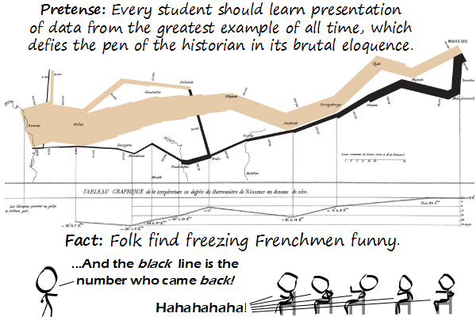

Comic JK 796
When I Feel Like It
⇤
<
?
>
⇥

⇤
<
?
>
⇥
Forum
.
RSS
.
Digg
.
Facebook
.
Reddit
.
Twitter
.
Stumbleupon
Enter your thoughts on number 796 here. Please, no spamming, trolling, phreaking, or describing the colour of hypothermic Frenchmen. > color, not colour >> couleur, not color >>> MAROOON!!!!! >>>>Keller Pfffrrrrt HAHAHAHAHAHAHAHAHA freezing Frenchmen HAHAHAHAHAHA That IS hilarious XD Too small to see the writing so I have no idea what this is about. I mean, the graphic's too small, not me. > Read XKCD 124. See mention of Edward Tufte. Google him. Get "The Visual Display of Quantitative Information" out from library. See this graphic large enough to read. Joke understood. >> Did all these things. Still don't get it. >>> I assume this graph is famous and represents some event in which french people froze. >>>> french went to invade rusia (brown), french who came back (black) >>>>>If you google "graphical presentation of data," this is what you find. Also the phrase "defies the pen of the historian in its brutal eloquence." Silly Bonaparte. Never get involved in a land war in Asia! >At least not during wintertime... >>At least he didn't go against a Sicilian when death was on the line. is that hard to learn, not to go to rusia in winter, ever (less if you want to invade it...) >Obviously. But maybe in this case it wasn't too bad that Hitler repeatet Napoleons mistake... >WW3 will end in winter in russia >the mongols conquered Russia somehow.